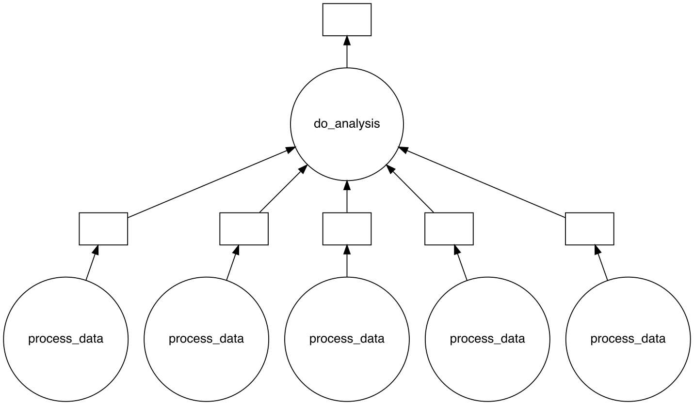

Using Dask to scale your Python program
Dask is a Python library that allows you to scale your existing Python code for optimal use on HPC systems. More information on Dask can be found here. Here, we demostrate a simple example of how the Dask delayed function can be used to parallelize your code and how to create a Dask cluster using the SLURMCluster.
Parallelize your code with dask.delayed
dask.delayed
This example is adapted from the Dask documentation on dask.delayed found here.
Imagine you have a large amount of data that needs to be processed before you can do any analysis. If the data can be separated into smaller chuncks that can be processed independently, you can use the dask.delayed function to parallelize your code. In this example we consider such a scenario where we have a list of data (all_data) that can be processed independently. Using a for-loop, we process all the data independently using the function increment_data. Once the for-loop is complete, we do the final analysis using the function do_analysis.
def increment_data(data):
return data + 1
def do_analysis(result):
return sum(result)
all_data = [1, 2, 3, 4, 5]
results = []
for data in all_data:
data_incremented = increment_data(data)
results.append(data_incremented)
analysis = do_analysis(results)
We will now parallize this code by using dask.delayed as a decorator to turn the function increment_data into a delayed function. The function will now behave lazy and return a Delayed object instead of the actual result. The Delayed object holds your function and its arguments in order to run it in parallel later using a Dask cluster. The actual computation is delayed until the compute method is called, here done by calling analysis.compute().
import dask
@dask.delayed
def increment_data(data):
return data + 1
def do_analysis(result):
return sum(result)
all_data = [1, 2, 3, 4, 5]
results = []
for data in all_data:
data_incremented = increment_data(data)
results.append(data_incremented)
analysis = dask.delayed(do_analysis)(results) # dask.delayed can also be used in
# in this manner
final_result = analysis.compute() # execute all delayed functions
print(f"and the final result is: {final_result}")
SLURMCluster and dask-jobqueue
Warning
Different HPC clusters often operate with different policies on how to queue jobs. For example, Betzy allocate whole nodes to jobs while Saga allocates cores. Sometimes the default configuration of the SLURMCluster fits badly with the policy for a given HPC cluster.
Next, we will use the SLURMCluster class from the dask-jobqueue package. This class is used to create a Dask cluster by deploying Slurm jobs as Dask workers. The class takes arguments needed to queue a single Slurm job/worker, not the characteristics of your computation as a whole. The arguments are similar to the #SBATCH commands in a Slurm script. Using the scale method, we can scale the cluster to the desired number of workers. This example is tested on Saga. Remember to replace the Slurm parameters with your own and make sure the Slurm commands are suitable for the HPC system you are using.
import dask
from dask.distributed import Client
from dask_jobqueue import SLURMCluster
cluster = SLURMCluster(cores=1,
processes=1,
memory="500M",
walltime="00:05:00",
project="nn9999k",
interface='ib0')
cluster.scale(5) # scale cluster to 5 workers
client = Client(cluster) # connect to the cluster
@dask.delayed
def increment_data(data):
return data + 1
def do_analysis(result):
return sum(result)
all_data = [1, 2, 3, 4, 5]
results = []
for data in all_data:
data_incremented = increment_data(data)
results.append(data_incremented)
analysis = dask.delayed(do_analysis(results))
final_result = analysis.compute()
print(f"and the final result is: {final_result}")
cluster.close() # shutdown the cluster
client.close() # shutdown the client
Here, we configured each worker to have 1 core, 500 MB of memory and a walltime of 5 minutes. Using cluster.scale(5), we scaled the the cluster to contain 5 workers. Running squeue -me after executing your main Slurm script will show that 5 additional Slurm jobs that were created (see squeue output examples for reference). The figure below shows the task graph created by Dask for this specific Python example.

Executing your Python script on the HPC system
First, find available versions of Dask on the HPC system. If there is no Dask installed globally on the cluster, install Dask yourself in a virtual environment. If this is the case, you can skip to the following section on Installing Dask in a virtual environment and visualizing the task graph.
$ module spider dask
Then load the module for the version you want to use:
$ module load dask/your_version
An example Slurm job script tested on Saga is found below. Remember to replace the Slurm parameters with your own and make sure the Slurm commands are suitable for the HPC system you are using.
#!/bin/bash
#SBATCH --account=nn9999k
#SBATCH --job-name=dask_example
#SBATCH --ntasks=1
#SBATCH --mem-per-cpu=1GB
#SBATCH --time=0-00:10:00
## Recommended safety settings:
set -o errexit # Make bash exit on any error
set -o nounset # Treat unset variables as errors
# Loading Software modules
module --quiet reset # Restore loaded modules to the default
module load dask/your_version
module list
python dask_example.py
exit 0
Note
It is possible to manually configure a distributed Dask cluster without using the SLURMCluster class. This is more advance use of Dask and is not covered in this tutorial. The benefit of this approach is that workers are created inside a main job instead of spawning individual Slurm jobs, thus your calculations are confined to one Slurm job. More information can be found here.
Installing Dask in a virtual environment and visualizing the task graph
Installing Dask in a virtual environment
Installing Dask in a virtual environments enables you to use your preferred version of Dask and to install optional dependencies. Dask can be installed in a virtual environment using pip. More information about virtual environments and installing Python packages can be found here: Installing Python packages as a user. Dask-jobqueue has to be installed together with Dask if you are using SLURMCluster.
$ module load Python/your_version
$ python -m venv my_new_pythonenv
$ source my_new_pythonenv/bin/activate
$ python -m pip install dask dask-jobqueue
Visualizing the task graph
Here we install Dask in a virtual environment together with the Graphviz library, which is an optional dependency for needed for visualizing the task graph. You need both the Graphviz system library and the Graphviz Python library installed. You can load the Graphviz system library using the module load command if it is installed globally.
First, find available versions of graphviz on the HPC system:
$ module spider graphviz
Then load the module for the version you want to use:
$ module load graphviz/your_version
If the Graphviz module is not installed globally on the HPC system, you can install it yourself using EasyBuild. More information about EasyBuild and how to load manually installed software can be found here: Installing software with EasyBuild.
Now you can create a virtual environment and install Dask, Graphviz and, if you are using SLURMCluster, Dask-jobqueue. Here, we will use pip. More information about virtual environments and installing Python packages can be found here: Installing Python packages as a user.
$ python -m venv my_new_pythonenv
$ source my_new_pythonenv/bin/activate
$ python -m pip install dask graphviz dask-jobqueue
Warning
If you are using a virtual environment, you need to make sure that the virtual environment is created with the same Python version that the Graphviz module uses. For example, if you are using Graphviz/2.47.2-GCCcore-10.3.0, you need to create the virtual environment with Python 3.9.5. To find the correct Python version, load Graphviz with module load graphviz/your_version then run module list and look for the Python version which was just loaded with Graphviz. If you create the virtual environment straight after loading Graphviz, the correct Python version will be used.
Below you find an example slurm job and python script using Graphviz tested on Saga. Remember to replace the Slurm parameters with your own and make sure the Slurm commands are suitable for the HPC system you are using.
#!/bin/bash
#SBATCH --account=nn9999k
#SBATCH --job-name=dask_example
#SBATCH --ntasks=1
#SBATCH --mem-per-cpu=1GB
#SBATCH --time=0-00:10:00
## Recommended safety settings:
set -o errexit # Make bash exit on any error
set -o nounset # Treat unset variables as errors
module --quiet reset
module load Graphviz/your_version # replace with the version you want to use
export PS1=\$
source my_new_pythonenv/bin/activate # replace my_new_pythonenv with the name
# of your virtual environment
# It is also recommended to to list loaded modules, for easier debugging
module list
python dask_example.py
exit 0
You can now safely include the visualize function in your script, which is the function which will produce an image of the task graph.
import dask
from dask.distributed import Client
from dask_jobqueue import SLURMCluster
cluster = SLURMCluster(cores=1,
processes=1,
memory="500M",
walltime="00:05:00",
account="nn9999k", # NB: in newer versions of dask-jobqueue, "project"
# has been renamed to "account"
interface='ib0')
cluster.scale(5)
client = Client(cluster)
@dask.delayed
def increment_data(data):
return data + 1
def do_analysis(result):
return sum(result)
all_data = [1, 2, 3, 4, 5]
results = []
for data in all_data:
data_incremented = increment_data(data)
results.append(data_incremented)
analysis = dask.delayed(do_analysis)(results)
final_result = analysis.compute()
analysis.visualize(filename="visualize_taskgraph.svg")
cluster.close()
client.close()